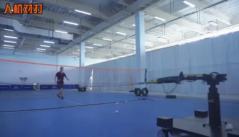

运动机器人Sports robotics
三球一体运动机器人Multi-sport robot: table tennis, badminton, and tennis
面向乒乓球、羽毛球和网球的人机对打，展示球类感知、轨迹预测与移动挥拍的协同；实机视频覆盖三类球运动，结合 MV-BMR 文献说明羽毛球的两阶段预测与控制。For human–robot rallies in table tennis, badminton, and tennis, the demonstrations show coordinated perception, trajectory prediction, positioning, and striking. The MV-BMR paper provides context for two-stage badminton prediction and control.
- 参与类型Involvement
- 参与项目Collaborative project
- 演示任务Demonstrations
- 乒乓球、羽毛球、网球Table tennis, badminton, tennis
项目背景Background
球类运动要求机器人在来球落地或越过可击打区域前完成感知、判断、移动与回击。不同球类的飞行速度、运动规律和场地尺度不同，但都需要把视觉观测与移动平台、挥拍机械臂联动起来。Ball-sport robots must perceive, decide, reposition, and return a ball before it leaves the reachable zone. Flight dynamics and court scale differ across sports, but all require close coordination between vision, a mobile platform, and a striking arm.
本页通过三球一体实机视频展示平台在不同球类场景中的动作，并参考 Shi 等人的 MV-BMR 研究梳理羽毛球的感知与控制思路。实机演示和相关文献实验分别列示。The multi-sport video documents physical actions across the three sports. Shi et al.’s MV-BMR study provides context for badminton sensing and control, with the supplied demonstrations and related literature experiments presented separately.
任务说明Task
机器人根据来球状态调整位置与球拍姿态，在可击打时间窗口内完成回击。视频依次包括乒乓球正反手及人机对打、羽毛球对打、网球对打，展示不同球类与球拍配置下的动作。The robot adjusts position and racket pose from the incoming ball state and returns it within the available interception window. The video includes table-tennis forehand/backhand and rallies, followed by badminton and tennis rallies under different racket configurations.
- 感知来球并估计未来可击打区域，争取底盘移动时间。Observe the ball and estimate a future interception region to provide time for base movement.
- 协调底盘站位、机械臂姿态与挥拍时机，连接预测结果和真实动作。Coordinate base position, arm pose, and striking time to translate predictions into physical actions.

设备说明Hardware
视频中的实机由移动底盘、挥拍机械臂和球拍组成，在不同场地中进行三类球运动。设备图截取自演示视频，展示实际平台与挥拍结构。The video shows a mobile base, striking arm, and racket operating in three sports settings. The hardware view is a still from the supplied demonstration.

系统和关键技术System and key technologies
运动任务的基本流程为来球感知、轨迹预测、击球位置选择和底盘/机械臂协同执行。对于可用反应时间短的羽毛球，尽早估计落点区域有助于先启动平台，再利用新的视觉观测修正击球位置。The pipeline connects ball sensing, trajectory prediction, interception selection, and coordinated base/arm execution. For fast badminton exchanges, an early region estimate allows the platform to move before later visual observations refine the hit point.
在 MV-BMR 羽毛球方案中，第一阶段将球拍 IMU 与视觉信息输入 SEPNet，提前估计可击打区域并以 PID 启动平台；第二阶段持续更新视觉轨迹与击球点，通过 NMPC 协调平台和机械臂。两阶段结构体现了先争取移动时间、再逐步提高击球精度的设计思路。In the MV-BMR badminton system, SEPNet combines racket-IMU and visual information to estimate a hit zone early, with PID starting the platform. A second stage updates the visual trajectory and interception point and uses NMPC for coordinated base and arm motion. This structure first gains movement time and then progressively refines interception.
参考文献：MV-BMR（Information Fusion, 2025）Reference: MV-BMR (Information Fusion, 2025)
演示与结果Demonstrations
以下三球一体实机视频按球类拆分，直接从运动开始播放。乒乓球片段展示正反手与连续回击，羽毛球和网球片段展示移动平台在真实场地中的人机对打。The multi-sport video is split by sport, with each clip starting at the physical action. Table-tennis footage shows forehand, backhand, and successive returns, while badminton and tennis clips show mobile-platform rallies in real courts.
相关文献实验：MV-BMRRelated literature: MV-BMR experiments
Shi 等人在 MV-BMR 论文的实验部分报告：羽毛球短球平均击球成功率为 92.2%，最长连续对打为 68 回合。该文献结果展示了两阶段轨迹预测与控制在快速来球任务中的验证效果。The experimental section of Shi et al.’s MV-BMR paper reports 92.2% mean short-shot hit success and a longest rally of 68 exchanges. These literature results demonstrate the evaluated two-stage trajectory-prediction and control approach for fast incoming shots.